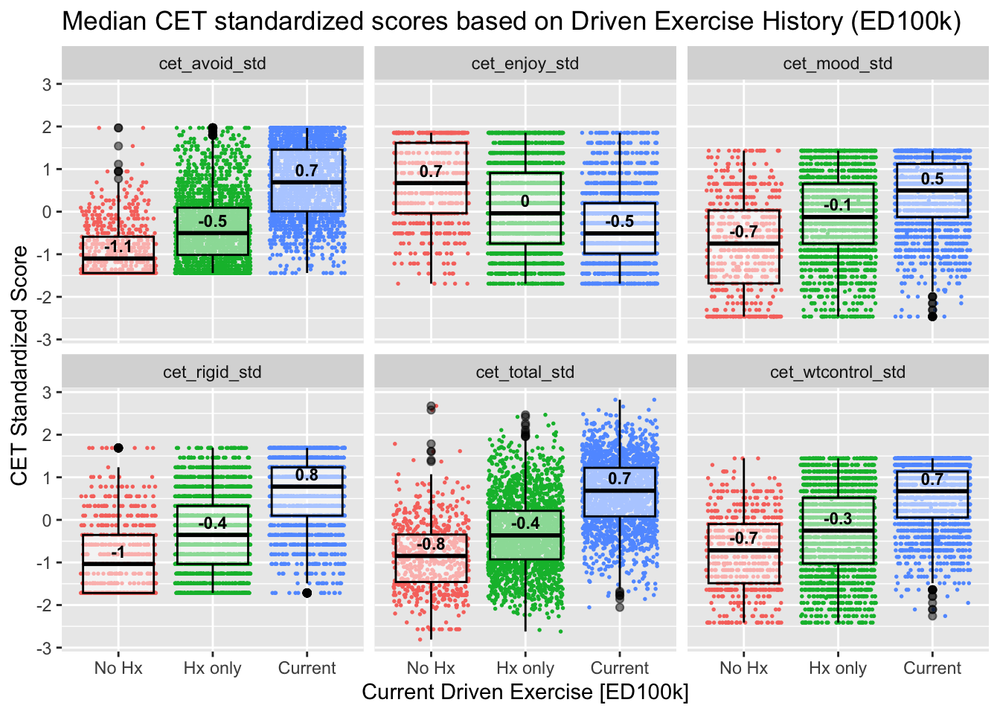
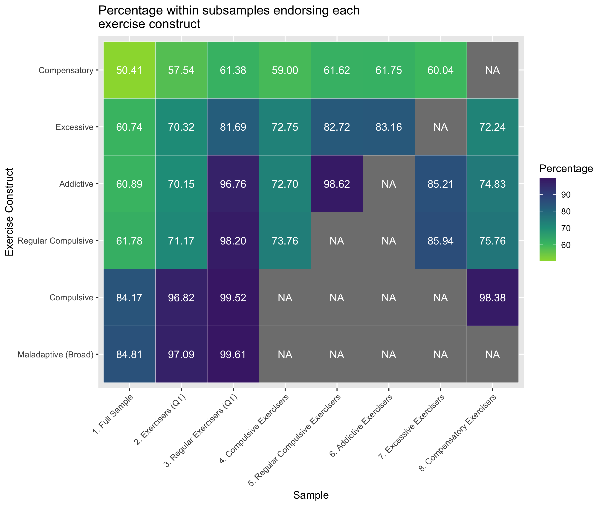
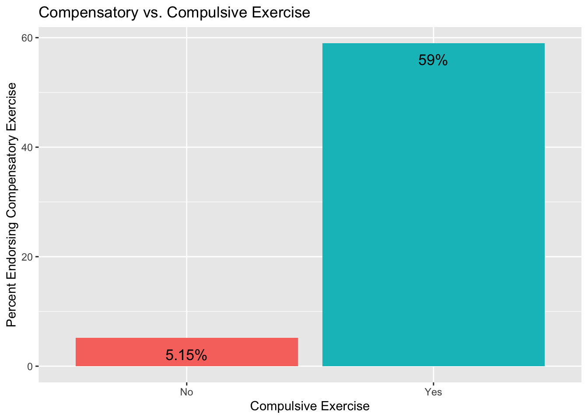
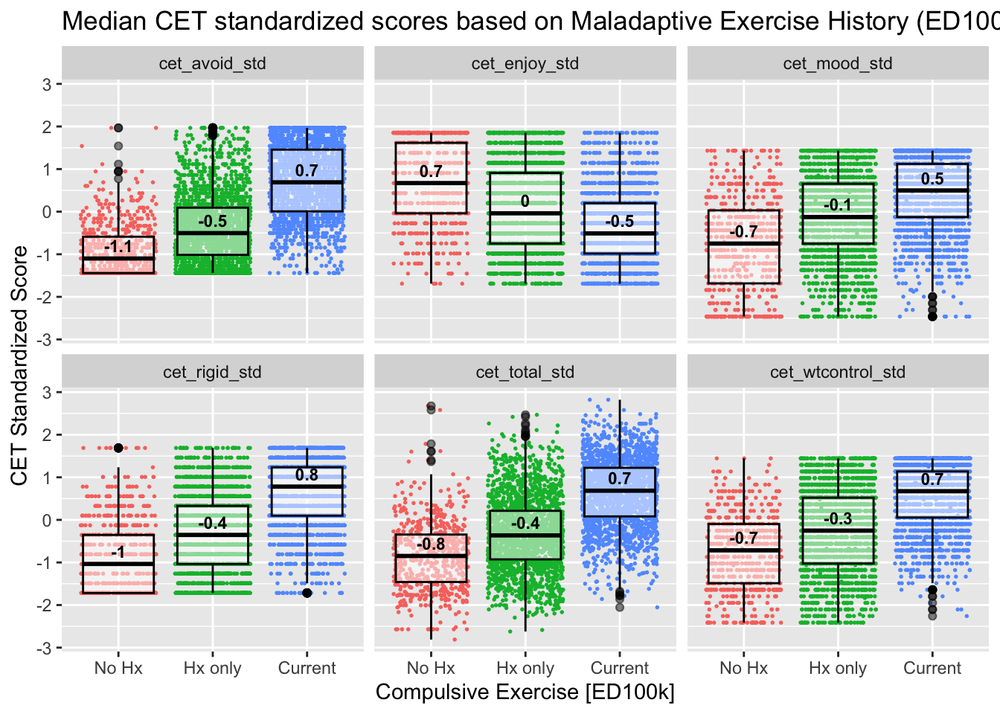
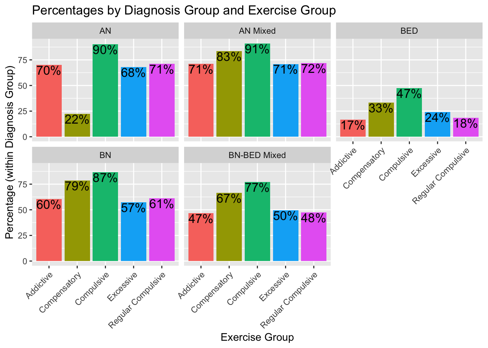
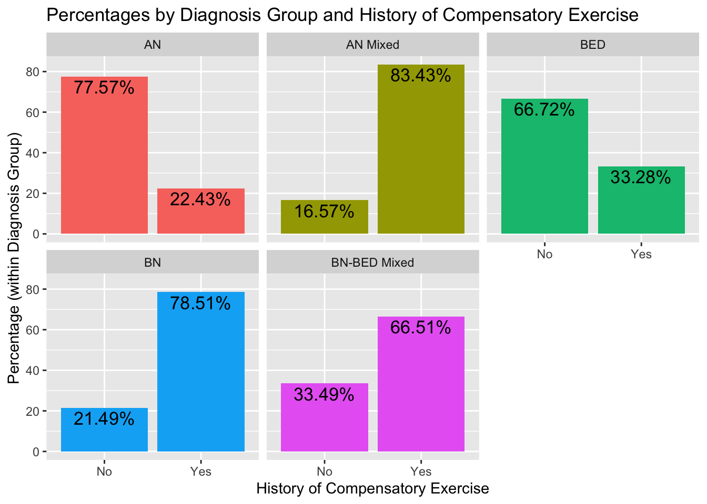

EDGI Exercise Validation Paper Results
Preliminary Aim - Develop a scoring algorithm
The first aim of this paper is to develop a scoring algorithm for a ED100k exercise items in an ED sample based on theoretical literature and available ED100k items which captures and defines rates of:
1. Compulsive Exercise
Ever and Regular Compulsive Exercise
Current Compulsive Exercise
2. Exercise Addiction
3. Excessive Exercise
4. Compensatory Exercise
5. Maladaptive Exercise (Broad)
Scoring
The ED100k included 12 questions regarding maladaptive exercise. The first question which all participants were asked, inquires as to whether individuals ever exercised to intentionally control weight and shape (Q1). Only those who endorsed EVER Exercising to intentionally control weight or shape were asked to respond to two additional questions which asked about exercise in more detail, including two questions (Q2, Q3) about whether individuals ever felt compelled to exercise and whether they felt uneasy or distressed if unable to exercise. In a third step, those who reported ever exercising to intentionally control weight and shape and answered ‘Yes’ to either Q2 or Q3 were additionally asked three questions (Q4-Q6) about whether exercise interfered with life activities or diet, along with questions regarding the onset (Q7), duration (Q8), and frequency (Q9) of their compulsive exercise, along with whether they engaged in the behavior currently (Q10) and the last age at which they engaged in the behavior (Q11). In a separate section, all participants were asked whether they had ‘exercised excessively’ specifically to compensate for episodes of binge eating or overeating (Q12). During recoding, those (n = 945) who reported no to Q1 - exercise to control shape and weight, were marked as ‘0’ for follow-up questions. Those who reported that they had engaged in exercise to for weight and shape control but ‘No’ to both Q2 & Q3 (n = 200) were marked as ‘0’ for Q4-Q11.
Scoring algorithms for each subconstruct are presented in Table 1.
| Construct | Criteria | Nested Within |
|---|---|---|
| Exercise for Weight Control | To control weight and shape – participant endorses that they have exercised excessively (e.g. felt compelled to exercise, felt uneasy or distressed if unable to exercise) = ‘a few times, but it never became a habit’ or more | NA |
| Regular Exercise for Weight Control | To control weight and shape – participant endorses that they have exercised excessively (e.g. felt compelled to exercise, felt uneasy or distressed if unable to exercise) = ‘more often’ | NA |
| Compulsive Exercise | Exercise for Weight Control + Ever felt compelled to exercise == ‘YES’ OR Ever uneasy or distressed when unable to exercise == ‘YES’ |
Exercise for Weight Control |
| Regular Compulsive Exercise | Regular Exercise for Weight Control Ever felt compelled to exercise == ‘YES’ OR Ever uneasy or distressed when unable to exercise == ‘YES’ |
Exercise for Weight Control Regular Exercise for Weight Control Compulsive Exercise |
| Current Compulsive Exercise | Compulsive Exercise Do you currently exercise to control weight and shape AND feel compelled to exercise or distress if unable to exercise? == ‘YES’ |
Compulsive Exercise |
| Addictive Exercise | Regular Compulsive Exercise lasting at Least 3 month 1 or more of the following: caused them to change eating habits -decline opportunities to be with friends -exercised despite illness or injury |
Exercise for Weight Control Regular Exercise for Weight Control Compulsive Exercise Regular Compulsive Exercise |
| Excessive Exercise | Compulsive Exercise Duration >= 1 month Frequency = ‘Every Day’ or ‘Nearly Every Day’ |
Exercise for Weight Control Compulsive Exercise |
| Compensatory Exercise | Have you ever used any of the following to compensate for episodes of binge eating or overeating? (Mark all that apply) (choice=Exercised excessively (e.g., felt compelled to exercise, felt uneasy or distressed if unable to exercise)) | NA |
| Maladaptive Exercise | Compulsive Exercise == ‘Yes’ OR Compensatory Exercise == ‘Yes’ | NA |
Aim 1. Evaluate patterns of response across multiple exercise constructs, to identify the degree to which these constructs overlap in membership or capture distinct groups
We hypothesize that those indicating that they have 'exercise excessively' more often in the initial screening item will also be likely to meet criteria for compulsive exercise, exercise addiction, and excessive exercise (high sensitivity), and moderately likely to meet criteria for compensatory exercise (moderate sensitivity; high negative predictive value).
Figure 1 presents the proportion of the full sample along with subsamples meeting criteria for each (sub)construct

Sensitivity of Q1 - Excessive Exercise
Overall, there was high convergent validity for Q1 with Q2-Q6. Specifically, individuals eating disorders who endorse using exercise to intentionally control weight ‘more often’ are indeed highly likely to engage in this behavior for a substantive period of time (xx% of those reporting exercise to intentionally control weight ‘more often’ reported a duration of compulsive exercise > 3 months; a time period of equivalent to diagnostic levels of other intentional weight control behaviors), and to report symptoms consistent with a definition of both compulsive and addictive exercise. Regarding the sensitivity of Q1 to detect compulsive, addictive, and excessive exericse, xxxx (add confusion matrix statistics here). Overall, the vast majority of individuals with eating disorders who reporting regular exercise for weight loss to control weight and shape report that this exercise was compulsive, and that they also experienced life interfering sequellae of this behavior. Regarding specific addictive exercise symptoms, the modal number of exercise interference items was all 3. Findings suggest high sensitivity of Q1 to additional follow-up questions regarding addictive and compulsive exercise, with slightly less sensitivity to excessive exercise (high frequency)
With regards to compensatory exercise, about (61.38)% of individuals who reported maladpative exercising ‘more often’ in Q1 also reported a history of compensatory exercise (sensitivity = ). Among the group reporting compensatory exercise, xx% reported exercising for weight loss at all in Q1, (NPV = ), and xx% reported exercising for weight loss ‘more often’ in Q1 (NPV = ). In sum, compensatory exercise was common, but somewhat less prevalent than other maladaptive exercise behaviors, and there was high sensitivity to detect compensatory exercise for those who reported any exercise for weight control in Q1.
Aim 2. Evaluate Convergent and Discriminant Validity between history of maladaptive and compulsive exercise and: current compulsive exercise, perfectionism, and OCD sympotms
H2a: Individuals who do not report any history of maladaptive and compulsive exercise will not report current compulsive exercise (high negative predictive value). >90% negative predictive value of history to 1. Current compulsive exercise on the EDEQ, 2. Current compulsive exercise on the CET
H2b: Comparing those with and without history of compulsive exercise, those with history of compulsive exercise will report higher current compulsive exercise symptoms (all CET subscales) than those without. Those reporting current compulsive exercise will report the highest CET scores. ANOVA comparing those with no compulsive exercise, history of compulsive exercise only, and current compulsive exercise on current CET, p < .05 for all subscales and global, and calculation of Cohen's d effect sizes.
Current Exercise
Proportion meeting CET Clinical Cutoff based on Maladaptive Exercise History

Sensitivity and Specificity of Current Driven Exercise on ED100k for CET Clinical
Confusion Matrix and Statistics
Reference
Prediction 0 1
0 2243 418
1 699 1178
Accuracy : 0.7539
95% CI : (0.7411, 0.7663)
No Information Rate : 0.6483
P-Value [Acc > NIR] : < 2.2e-16
Kappa : 0.4811
Mcnemar's Test P-Value : < 2.2e-16
Sensitivity : 0.7381
Specificity : 0.7624
Pos Pred Value : 0.6276
Neg Pred Value : 0.8429
Prevalence : 0.3517
Detection Rate : 0.2596
Detection Prevalence : 0.4136
Balanced Accuracy : 0.7503
'Positive' Class : 1
Number of Days in the Past 28 reported Driven Exercise based on Driven Exercise History

Perfectionism and OCD Symptoms
H2c: Within diagnostic groups - those with vs. without history of maladaptive exercise will report higher Frost MPS and OCD symptoms. t-tests within diagnostic groups comparing frost MPS and OCI-R/OCI-12 subscale scores, p < 0.05, and calculation of Cohen's d effect sizes
H2d: Associations with the MPS and OCD measure will be weaker than with the CET. Interpret patterns of ES
t-tests within diagnostic groups comparing frost MPS and OCI-R/OCI-12 subscale scores, p < 0.05, and calculation of Cohen's d effect sizes
Aim 3. Demonstrate Prevalence of Maladaptive (Broad), Compulsive, Addictive, Excessive, and Compensatory Exercise across Diagnostic Groups
H3a. Maladaptive exercise, compulsive exercise, and exercise addiction will be a common symptom across diagnoses. More common in AN and BN than BED. Rates of maladaptive exercise, compulsive exercise, excessive exercise, and exercise addiction will all be > 50% in AN and BN presentations; > 20% in BED
H3b. Compensatory exercise will be more common among those with AN mixed and BN as compared to AN only . Multinomial logistic regression with AN group as reference – BN groups will not differ but BED will? (or some other way to use dummy coding to compare groups )

History of Compulsive Exercise was reported most frequently in the AN, AN-Mixed Diagnosis, and BN groups, around 60% in each of these diagnostic groups reporting history of regular engagment. Compulsive exercise was also reported in half of those with BN-BED (50%) and a portion (20%) of those with BED.


